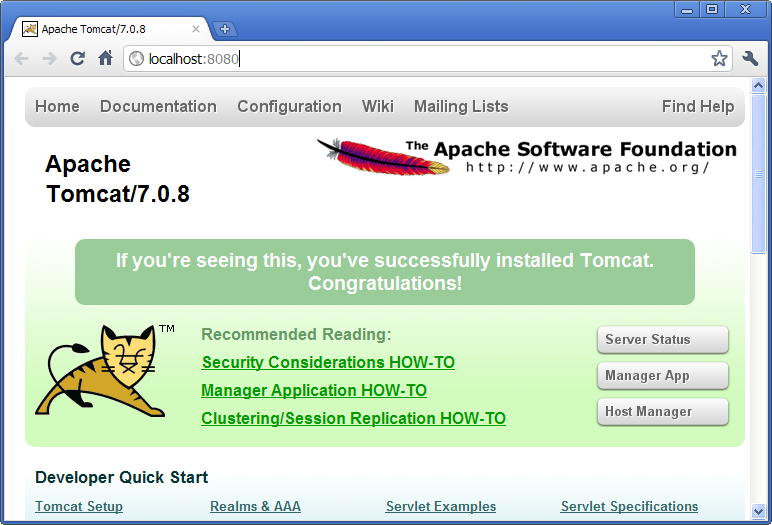
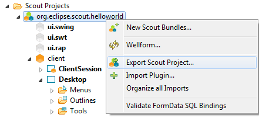
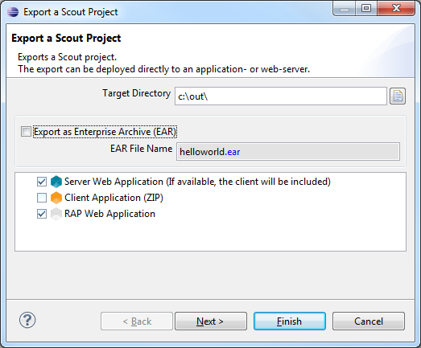
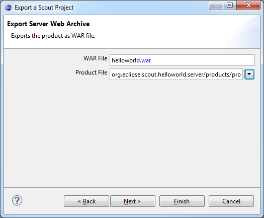
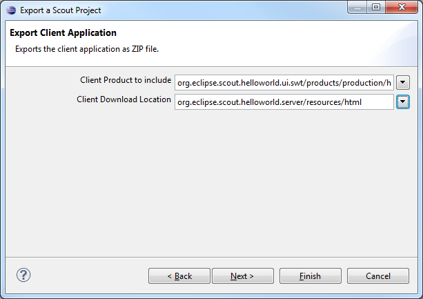
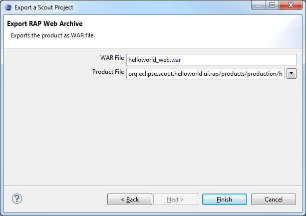

Deploy a Scout Application to Tomcat
This page shows how to export and deploy your Scout application to a Tomcat webserver using the Scout SDK.
Mac OS XThere is a Bug on Mac OS X when using the Oracle JDK 7:
bug 378445. If you want to export Scout projects on Mac please use the Apple JDK 6 until the bug is solved.
Install Tomcat
If you have not yet installed Tomcat please go to the Tomcat homepage. Then download and install Tomcat version 6 or 7 using the proposed default settings.
Once you started the webserver you verify that its running by starting your browser with the address http://localhost:8080. Your browser should display some page similar as shown below.

Export Scout Application
In the Scout SDK perspective use the context menu 'Export Scout Project ...' on the project node as shown below.

This opens the Export a Scout Project dialog as shown below. For this tutorial we assume that you have all user interfaces in your project.

In the first field we define in which directory the exported files will be stored.
In the checkbox below we can also choose if we would like to create an EAR containing all WAR files. If this checkbox is ticked, all output WAR files will be packed together in a single EAR that can be deployed into an application server like JBoss. If this checkbox remains unticked, each WAR file will be stored separately in the output folder defined above.
In the list you can choose amongst the following export artifacts:
- Server Web Application: The server application will be exported. If a client is available, it is packed into the server as well and will be provided for download on the target URL where the resulting WAR file will be deployed.
- Client Application: The client application packed as ZIP file. The same client will be available for download on the server if ticked (see above).
- RAP Web Application: The RAP web UI application. After the deploy of this WAR file the web UI can be accessed using an URL like http://host:port/webappname/web
Depending on which elements are ticked you will have to specify the details in the next wizard pages.

If the server is ticked as export artifact, you will have to define the WAR file name of the server application and choose which product you would like to export.elopment product)

If a client should be exported, you have to choose which client product to use (usually a production product should be selected). Furthermore you must define where the client should be stored to be available for download after the deploy.

If the RAP Web Application has been ticked as export artifact in the first step, we must specify now how the resulting WAR file should be named and which RAP product that should be exported.
After pressing Finish the selected components will be exported to the target directory specified in the first step. As soon as the export as completed you can deploy the WAR files in the output directory to your Tomcat installation e.g. using the Manager App that is part of Tomcat: http://localhost:8080/manager/.
Test the Application
Now we can access the application homepage under http://localhost:8080/helloworld/
From there we can download the client application as ZIP file. After it has been extracted you can start the client. It will connect to the server that has just been deployed.
If you have also decided to export the RAP UI, you can deploy this WAR file the same way as for the server application. You should then be able to access the Web UI with the following URL: http://localhost:8080/helloworld_web/web